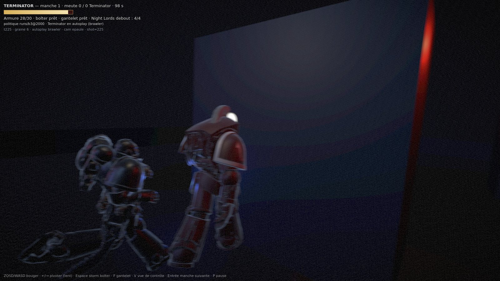
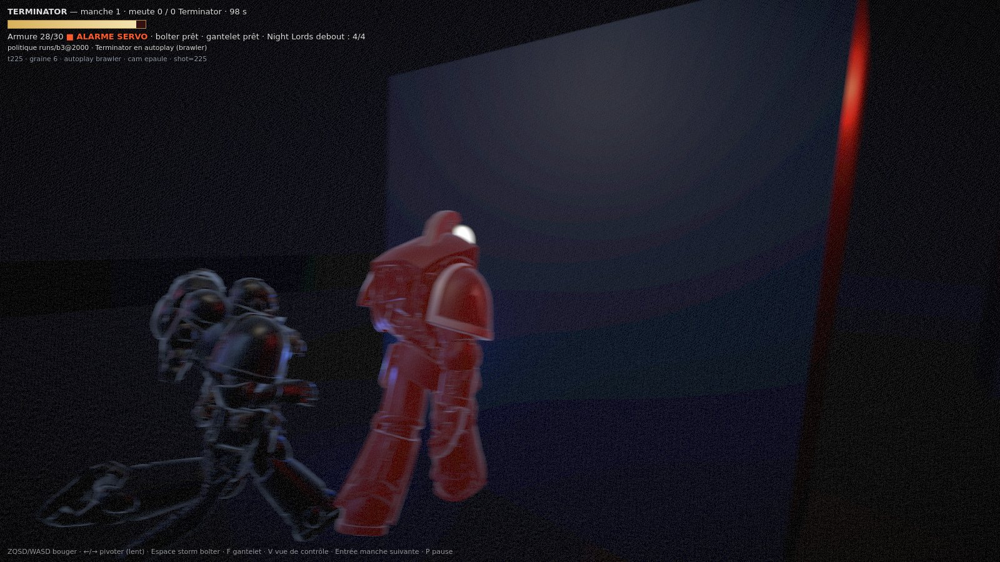

Graine 6 (?seed=6), ?autoplay=brawler, tick 225 : premier coup porté au Terminator (hit, 2 dégâts, zone rear, armure 30 → 28). La simulation pose servoAlarm = 10 ticks ; le rendu ne fait que mettre en forme.

?alarme=0 — sans alarme : l'armure reste mate, le HUD ne dit rien. Tick, graine et mode brûlés dans l'image.
| tick | t225 | t226 | t227 | t228 | t229 | t230 |
|---|---|---|---|---|---|---|
luminance du corps, écart à ?alarme=0 | +5,56 | +1,50 | +4,70 | +0,47 | +2,17 | −0,82 |
Un clignotement à 2,5 Hz — période de 4 ticks. À 8 Hz, l'intensité sautait d'un tick à l'autre sans dessiner de battement : la simulation échantillonne à 10 Hz, et une fréquence plus rapide que ça ne se lit pas, elle scintille. Le rouge décroît avec l'alarme (10 ticks), donc la dernière image est presque éteinte.
Image entière, blocs de 8 px : +0,58/255 en moyenne, 13,2 % des blocs > 2, 4,0 % > 8, 0,2 % > 16. Plancher de grain mesuré à côté : 5,4 % > 2, 0,0 % > 8.
Coût : 0 draw call, 0 triangle, 0 lumière — on touche l'émissif du matériau de l'armure. Trois dosages essayés (0,9 / 0,22 / 0,07) : à 0,9 le Terminator devenait une masse rouge fluo et on ne lisait plus l'armure ni les Night Lords autour.